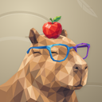
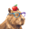
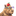
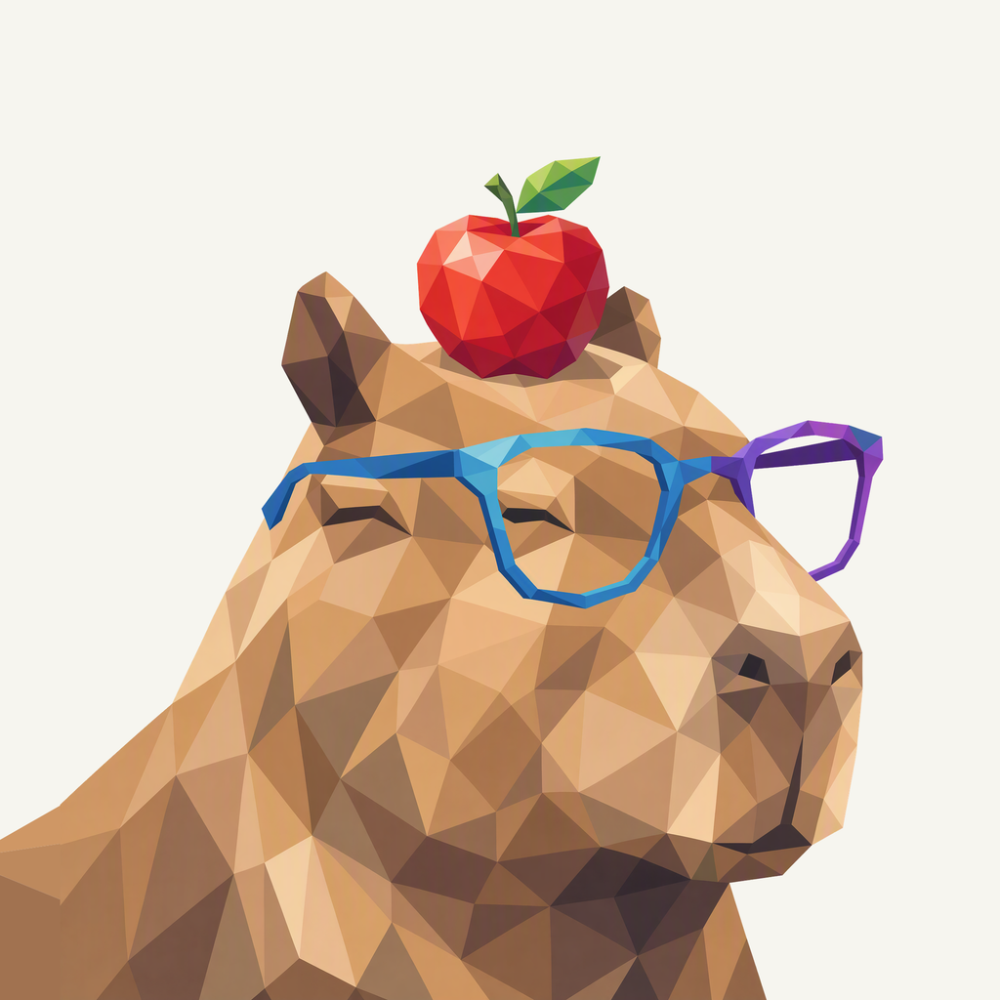
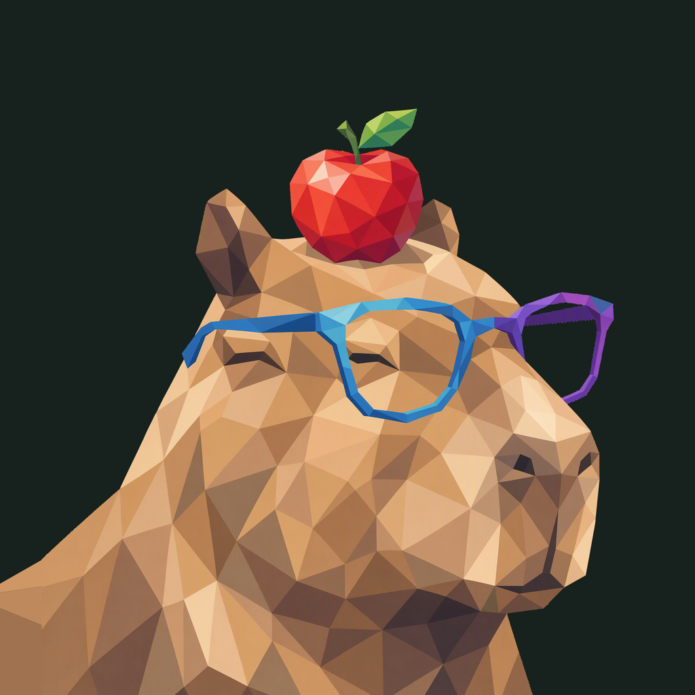

01 / Composition
A calm, balanced moment
The broad muzzle and relaxed closed eyes stay dominant. A natural short neck and shoulder enter from the lower left, leaving the whole apple, ear, and outer glasses arm inside the safe frame.
Animal family · Refined framing
A calm capybara pause, balancing the familiar apple and blue-purple glasses.
Adopted framing repair · finishing 02
Native 2048 × 2048
01 / Composition
The broad muzzle and relaxed closed eyes stay dominant. A natural short neck and shoulder enter from the lower left, leaving the whole apple, ear, and outer glasses arm inside the safe frame.
02 / Drawing
Warm connected polygons retain the capybara’s coat and expression. The original apple and blue-purple glasses keep their color relationship, with clean transparent gaps around the frame.
03 / Presentation
Broken elliptical water rings and one quiet leaf-vein impression fill a warm sand field. The broad tonal texture gives the portrait a calm setting without becoming a scene.
Presentation tiles at 128/64 px; transparent artwork for small app and browser marks.



The broad caramel muzzle, red apple, and blue-purple glasses remain visible at 32 px. Closed eyes and small leaf facets simplify at 16 px; the 192 px login asset is also transparent.
A designed background, with colors sampled from the native generated artwork.
Select a swatch to copy its hex value. The Life.ai UI primary (#3C83F6) remains a separate product color.
One transparent foreground, checked on two contrasting backgrounds.


Azure Foundry · gpt-image-2 · one request · native 2048 × 2048
Loading prompt…
The liked original defines the animal, expression, and palette. Frogie guides connected flat facets; these owner-provided boards guide the independent background, offset framing, and matte surface.


{kind=link}
{kind=link}
{kind=link}
{kind=link}
{kind=link}